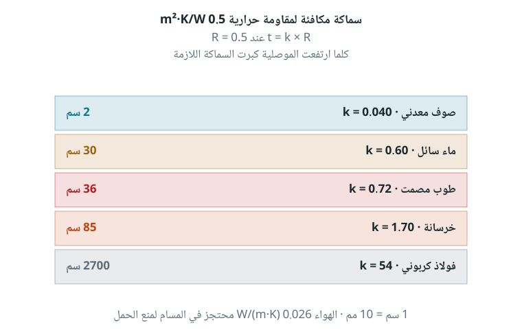

التوصيل الحراري
Thermal Conductivity
خاصية مادة تحدد الفيض الحراري لكل تدرّج حرارة: q″ = −k dT/dx، ووحدتها W/(m·K). النحاس 401 والصوف المعدني 0.040، والفارق أربع مراتب لأن حاملات الطاقة إلكترونات حرة في الأول وفونونات في الثاني.
التوصيل الحراري انتقال طاقة داخل المادة بلا نقل كتلة: الجزيئات أو الإلكترونات الأسرع في المنطقة الساخنة تنقل طاقتها إلى جاراتها عبر التصادم والاهتزاز. يوصف المعدّل بقانون فورييه q″ = −k dT/dx، حيث k الموصلية الحرارية بوحدة W/(m·K) وq″ الفيض الحراري بوحدة W/m². الإشارة السالبة تعني أن الحرارة تنتقل في اتجاه هبوط الحرارة.
تفصل المعادن عن العوازل بمرتبتين إلى أربع مراتب: النحاس 401 W/(m·K) والصوف المعدني 0.040. الفرق يعود إلى حاملات الطاقة: في المعادن إلكترونات حرة، وفي العوازل فونونات، أي اهتزازات شبيكية، تتبعثر بسهولة عند الحدود والفراغات.
لذلك تُصمَّم العوازل باحتجاز الهواء ساكنًا في مسام دقيقة؛ فالهواء نفسه موصليته 0.026، وكل ما تفعله المادة الصلبة هو منع الحمل داخل المسام وتثبيت الهواء.
كيف تعمل الظاهرة؟
في الشبكة البلورية تنتقل الحرارة كموجات اهتزازية كمومية، أي فونونات. يقاوم انتشارها التصادم مع فونونات أخرى ومع العيوب وحدود الحبيبات. الموصلية تتناسب مع السعة الحرارية وسرعة الصوت وزمن الاسترخاء وفق k ≈ (1/3) C_v v_s λ، حيث λ المسار الحر المتوسط للفونون. في المعادن تُضاف مساهمة إلكترونات التوصيل وهي الغالبة، ويصفها نموذج دروده، وتربطها علاقة فيدمان–فرانز بالناقلية الكهربائية k/σ = L T. ولهذا تكون المعادن الجيدة للكهرباء جيدة للحرارة، والسبائك أسوأ من مكوناتها النقية لأن التشوّه الشبكي يقصّر المسار الحر.
العلاقة بالأرقام
لمقاومة حرارية 0.5 m²·K/W عبر طبقة واحدة: السماكة اللازمة t = k·R. الصوف المعدني (k = 0.040) يحتاج 20 مم، والخشب (0.15) 75 مم، والماء (0.60) 300 مم، والزجاج (1.05) 525 مم، والفولاذ الكربوني (54) 27 مترًا. والفيض عبر 25 مم من الصوف بفرق 20 K: q″ = 0.040 × 20 / 0.025 = 32 W/m²، مقابل 480 W/m² لو كانت السماكة ماءً، و43,200 W/m² لو كانت فولاذًا. الفرق كله من k لا من السماكة ولا من فرق الحرارة.
مفاهيم متقاربة
الخلط الأول: مساواة الموصلية الحرارية بالسعة الحرارية. الماء سعته النوعية عالية جدًّا وموصليته متوسطة 0.60، والنحاس سعته منخفضة وموصليته عالية. الأولى تقيس الطاقة المخزونة لكل كلفن، والثانية معدّل النقل لكل تدرّج. الثاني: الظن أن الألمنيوم أفضل من النحاس لأنه أخف؛ النحاس 401 مقابل 237 للألمنيوم، ويُفضّل الألمنيوم في المبادلات لكثافته لا لموصليته. الثالث: قراءة k كخاصية ثابتة؛ في العوازل تعتمد بشدّة على الرطوبة والكثافة، وفي الغازات على الحرارة والضغط.
حدود التطبيق
قانون فورييه وصف خطّي للفيض ولا يشمل الزمن؛ للحالات غير المستقرة يلزم معامل الانتشار الحراري α = k/(ρc) لا k وحده. في المواد المسامية الرطبة تتجاوز k قيمتها الجافة بمراتب بسبب التوصيل عبر الماء والتبخّر والتكثّف داخل المسام. في الطبقات الرقيقة جدًّا، أي أقل من المسار الحر للفونون، تنخفض k بسبب التشتّت السطحي. وفي المواد المركّبة متباينة الاتجاه تكون k موترًا لا عددًا. أما الغازات المخلخلة فتعتمد موصليتها على الضغط لا على الحرارة فقط.

| الكمية | القيمة | المصدر |
|---|---|---|
| موصلية النحاس | 401 W/(m·K) | [1] |
| موصلية الصوف المعدني | 0.040 W/(m·K) | [1] |
| موصلية الماء السائل عند 20 °م | 0.60 W/(m·K) | [3] |
| موصلية الفولاذ الكربوني | 54 W/(m·K) | [2] |
| الفيض عبر 25 مم من الصوف بفرق 20 K | 32 W/m² | [1] |
المصادر
- 1 Thermal Conductivity of Common Materials and Gases — The Engineering ToolBox. www.engineeringtoolbox.com/thermal-conductivity-d_429.html · اطُّلع عليه 2026-11-16
- 2 Material Properties — cryogenic and structural data — NIST Cryogenics Technologies Group. trc.nist.gov/cryogenics/materials/materialproperties.htm · اطُّلع عليه 2026-11-16
- 3 University Physics Volume 2 — 1.6 Mechanisms of Heat Transfer — OpenStax. openstax.org/books/university-physics-volume-2/pages/1-6-mechanisms-of-heat-transfer · اطُّلع عليه 2026-11-16
استشهد بهذا المصطلح
الصيغتان مبنيتان من بيانات الصفحة نفسها: العنوان والتاريخ ورابط النسخة المنشورة.
التوصيل الحراري — Thermal Conductivity. (2026). ديوان المعرفة — انفراد. https://infiradev.com/diwan/terms/thermal-conductivity.html
@misc{thermal-conductivity2026,
title = {التوصيل الحراري},
titleaddon = {Thermal Conductivity},
howpublished = {{ديوان المعرفة — انفراد} — مرجع علمي عربي},
year = {2026},
url = {https://infiradev.com/diwan/terms/thermal-conductivity.html},
urldate = {2026-11-16},
note = {مراجعة علمية: مراجعة آلية — ديوان المعرفة (روابط المصادر + عقد المحتوى + وجود الرسم) 2026-11-16}
}
راجعه: مراجعة آلية — ديوان المعرفة (روابط المصادر + عقد المحتوى + وجود الرسم) 2026-11-16 · 2026-11-16 · آخر تحديث 2026-11-16